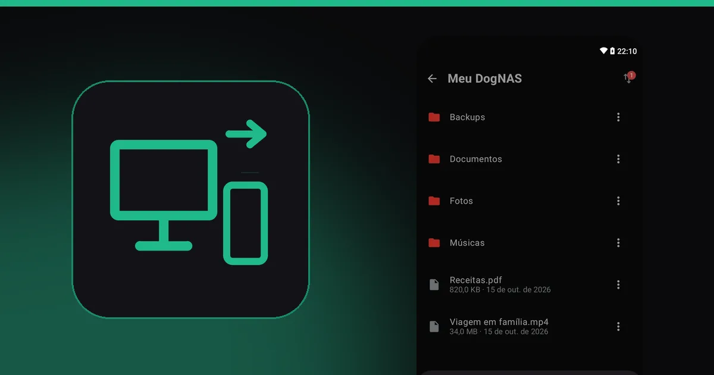

Como transferir arquivos entre o PC e o celular pelo Wi-Fi, sem cabo

Passar um arquivo do computador para o celular, ou do celular para o computador, parece simples até você precisar fazer isso toda semana. Cabo que nunca está à mão, e-mail para si mesmo, nuvem cheia. Existe um jeito de fazer pelo Wi-Fi de casa, direto, sem cabo e sem depender de uma conta.
Os jeitos mais comuns
- Cabo USB. Funciona sem rede e é rápido, mas exige o cabo, a permissão no celular e o aparelho ao lado do computador.
- Serviços de nuvem. Você envia para a nuvem e baixa no outro aparelho. É prático, mas usa internet, ocupa o espaço da sua conta e o arquivo passa por servidores de terceiros.
- Apps que abrem o celular no navegador do PC. Dispensam cabo, mas dependem de abrir o app a cada uso, e a conexão costuma cair quando a tela apaga.
- Bluetooth e Wi-Fi Direct. Servem para arquivos pequenos e avulsos, e variam muito de aparelho para aparelho.
- Um servidor de arquivos seu, em casa. Um aparelho fica ligado na rede e todos os outros acessam as mesmas pastas. É o único que você configura uma vez e usa sempre.
Como fazer com o DogNAS
O DogNAS transforma um celular ou tablet Android (7.0 ou mais recente) em um servidor de arquivos no Wi-Fi da casa. O PC e o celular acessam as mesmas pastas, e os arquivos trafegam cifrados (SSH/SFTP) pela sua rede, sem passar por nuvem.
- Instale o servidor no Android que vai guardar os arquivos e toque em Iniciar.
- Crie um perfil para você, com PIN e pastas próprias.
- No celular, abra o DogNAS Client Lite, aponte a câmera para o QR Code do perfil e digite o PIN. Envie e baixe arquivos pela fila de transferências.
- No PC, abra um cliente SFTP como FileZilla, WinSCP ou Cyberduck e use os dados de conexão que o servidor mostra na tela "Como conectar seu PC ou iPhone". Arraste os arquivos entre as janelas.
Pronto: o que você coloca no servidor pelo PC aparece no celular, e o que o celular envia aparece no PC. Funciona nos dois sentidos, sem cabo e sem ficar abrindo app a cada vez.


O que considerar
- Mesma rede. O PC e o celular precisam estar no Wi-Fi da casa, assim como o servidor.
- Velocidade. Depende da qualidade do seu Wi-Fi e do aparelho que serve de servidor.
- Servidor ligado. O aparelho precisa ficar ligado e conectado; alguns fabricantes limitam apps em segundo plano, então confira os requisitos.
- Cópia de segurança. O DogNAS guarda os arquivos no armazenamento que você escolheu e não faz backup por conta própria. Mantenha uma cópia independente do que é importante.
Quando vale a pena
Se você passa arquivos entre aparelhos de vez em quando, o cabo resolve. Se faz isso sempre, ou se quer que a família toda acesse as mesmas pastas, um servidor próprio em casa economiza tempo e espaço de nuvem. Para ver o que mais ele faz, leia como transformar um Android antigo em servidor de arquivos.